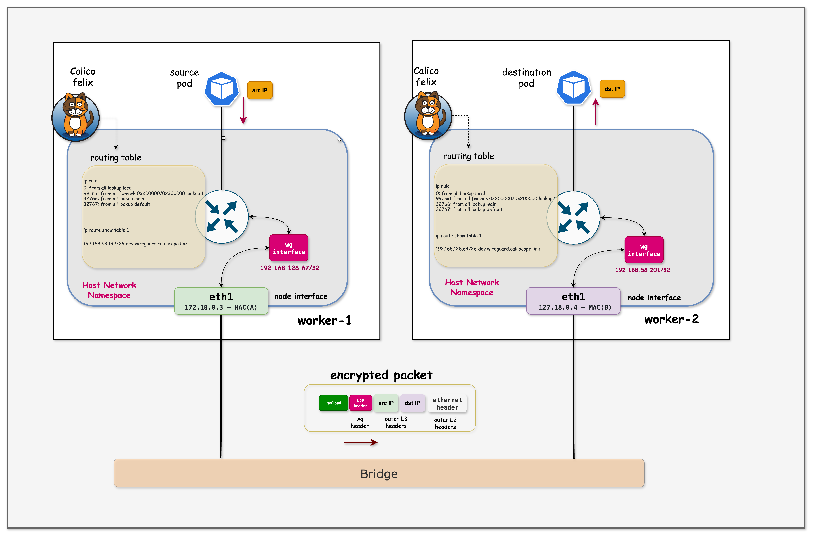

192.168.128.66Lesson 13 · WireGuard · Felix · policy routing
Calico WireGuard
跨节点流量加密
同一份 HTTP 请求，开启前能读到 token，开启后只剩 Node IP、UDP 51820 与不可读密文。
wireguard.caliUDP 51820fwmark 0x200000
HTTPLOCKWG
192.168.58.200172.18.0.3:51820encrypted UDP172.18.0.4:51820
应用继续使用 Pod IP 与 HTTP，节点之间的 underlay 只看到 WireGuard 外层
Why encrypt east-west traffic
跨节点流量会经过共享 underlay
HTTP + Bearer tokenpassword=...tcpdump
JSON + credentials02
Encryption boundary
WireGuard 保护 Node 到 Node 这一段
UDP 51820
跨节点 Pod 流量的 host-to-host 段。
同节点 Pod 之间的本地路径。
Pod 到本机 host 的短段仍是明文，需要 root 才易于截获。
03
Visible headers and hidden payload
开启前后，underlay 看到的内容不同
Outer IPtransportVXLAN / routed IPHTTP + auth + JSON
Node IPUDP 51820WG headerencrypted inner packet
准确理解：WireGuard 不隐藏外层 Node IP 和 UDP 端口。它隐藏内层 Pod 地址、传输层信息和应用载荷。
04
Cross-node placement is required
两个测试 Pod 必须位于不同节点
frontend-client
192.168.128.66preferred nodeAffinity
encrypted scope
backend-api
192.168.58.200preferred nodeAffinity
podAntiAffinity
frontend 要求与 backend 分布到不同 hostname。
同节点时
删除并重建 Pod，直到 kubectl get pods -o wide 显示不同 Node。
05
containerlab/13-wireguard
Lesson 13 的三节点拓扑
wireguard-control-plane
API、CoreDNS、Calico 控制组件
wireguard-worker
frontend-client
wireguard-worker2
backend-api 与抓包点
| 参数 | 课程值 | 作用 |
|---|---|---|
| Pod CIDR | 192.168.0.0/16 | Calico IPPool |
| Service CIDR | 10.96.0.0/16 | backend-api ClusterIP |
| encapsulation | VXLANCrossSubnet | WireGuard 开启前的基础网络 |
| Node image | kindest/node:v1.28.0 | WireGuard 内核能力来自宿主机 |
06
A deliberate plaintext demo
Frontend 持续请求 Backend API
frontend-client
GET /api/usersGET /api/configGET /api/healthHTTP1 request / second
backend-api
HTTPServer :8080返回 JSON 示例数据
Bearer tokenX-API-Keysession cookieBasic authdemo credentials
07
tools/01-backend-api.yaml
Backend API 返回可识别的演示数据
metadata: name: backend-api labels: app: backend-api role: backend spec: affinity: nodeAffinity: # prefer worker2 containers: - image: python:3.11-slim ports: - containerPort: 8080
# HTTP handlers /api/users usernames, demo passwords, database connection string /api/config demo AWS key, demo Stripe key, database URL /api/health status + timestamp
安全提示：不要把真实凭据写进测试流量。实验字符串是公开的 fake/demo 数据。
08
tools/02-frontend-client.yaml
Frontend 用 header 携带演示凭据
metadata: name: frontend-client spec: affinity: podAntiAffinity: requiredDuringSchedulingIgnoredDuringExecution: - topologyKey: kubernetes.io/hostname nodeAffinity: # prefer worker containers: - image: curlimages/curl:latest
循环请求
curl -s \ -H "Authorization: Bearer eyJ..." \ -H "X-API-Key: test_fake..." \ -H "Cookie: session=demo..." \ http://backend-api:8080/api/users sleep 1
Service DNS 与 ClusterIP 路径保持正常，WireGuard 对应用透明。
09
Safe demonstration practice
演示凭据必须保持公开与可撤销
课程内置 fake 值
固定字符串、已公开、不能登录任何真实系统。
test_fake_api_key_for_demo_only真实环境凭据
真实 JWT、数据库密码、云访问密钥或 session cookie。
never capture production secrets抓包权限：能在 Node 上运行 tcpdump 通常意味着高权限。生产环境应限制 Node root、审计访问并缩短抓包保留时间。
10
Automated lab setup
deploy.sh 创建环境并安装抓包工具
Kind topology
1 control-plane + 2 workersCalico 3.30
WireGuard disabledMicroservices
backend + frontendPlacement check
different nodesNode tools
tcpdump + wgcd containerlab/13-wireguard chmod +x deploy.sh ./deploy.sh export KUBECONFIG=$(pwd)/wireguard.kubeconfig
11
Exercise 1
三台节点 Ready，两个 Pod 跨节点
$ kubectl get nodes -o wide
wireguard-control-plane Ready control-plane
wireguard-worker Ready
wireguard-worker2 Ready$ kubectl get pods -o wide backend-api 1/1 Running 192.168.58.200 wireguard-worker2 frontend-client 1/1 Running 192.168.128.66 wireguard-worker
课程中的 Pod IP 是示例值。现场先记录自己的 IP 与 NODE，后续路由表、allowed ips 和抓包都要按现场输出解释。
12
Exercise 2
Felix 与 Node 都没有 WireGuard 配置
控制面
$ kubectl get felixconfiguration default \ -o yaml | grep -i wireguard (no output)
spec 中尚未设置 wireguardEnabled。
数据面
$ docker exec -it wireguard-worker \ ip link show type wireguard (no output)
节点没有 wireguard.cali 接口。
证据链：FelixConfiguration 没有开关，Node 也没有接口，下一步抓到的 underlay 流量属于未启用状态。
13
Exercise 3.1
开启前能直接 grep 到演示字段
# docker exec -it wireguard-worker2 \ tcpdump -Z root -i eth0 -A 2>/dev/null | \ grep -E --color=always 'password|secret|Bearer|API-Key|aws_|stripe_' "password": "xxx" Authorization: Bearer eyJxxx.xxx.xxx X-API-Key: sk_live_xxx "aws_access_key": "AKIAxxx" "aws_secret_key": "xxx" "stripe_api_key": "sk_live_xxx"
14
Exercise 3.2
完整抓包还能还原 HTTP 上下文
# docker exec -it wireguard-worker2 timeout 10 \ tcpdump -Z root -i eth0 -A 2>/dev/null | head -150 GET /api/users HTTP/1.1 Host: backend-api:8080 Authorization: Bearer [demo token] X-API-Key: [demo key] Cookie: session=[demo cookie] HTTP/1.0 200 OK Content-Type: application/json { "users": [...], "db_connection": "[demo value]" }
Pod / Node address
TCP ports
method、path、header、JSON
15
Exercise 4.1 and 4.2
一个 FelixConfiguration patch 开启 IPv4 加密
$ kubectl patch felixconfiguration default \
--type='merge' \
-p '{"spec":{"wireguardEnabled":true}}'
felixconfiguration.crd.projectcalico.org/default patcheddesired statewireguardEnabled: true
Felix 在参与节点上生成配置并建立 peers。
$ kubectl get felixconfiguration default -o yaml | grep -i wireguard
wireguardEnabled: true
不要立刻抓包：控制面字段先更新，Node 接口、peer 和路由需要几秒钟完成 reconcile。
16
Cluster-wide reconciliation
Calico 自动完成密钥、Peer 与路由配置
FelixConfiguration
wireguardEnabled true
Node key pair
private stays local
Peer discovery
public key + endpoint
wireguard.cali
interface + UDP 51820
Policy routing
table 1 + fwmark
无需手工维护：Felix 根据 Node 与 IPAM 信息计算 peer、endpoint 和 allowed ips。
17
Exercise 4.3
wireguard.cali 出现且 MTU 为 1440
# docker exec -it wireguard-worker ip link show type wireguard 10: wireguard.cali: <POINTOPOINT,NOARP,UP,LOWER_UP> mtu 1440 qdisc noqueue state UNKNOWN mode DEFAULT group default qlen 1000 link/none
18
Exercise 4.4
wg show 给出节点身份与 Peer 状态
# docker exec -it wireguard-worker wg show interface: wireguard.cali public key: eD2V...MREs= private key: (hidden) listening port: 51820 fwmark: 0x200000 peer: FJ8D...G0c= endpoint: 172.18.0.4:51820 allowed ips: 192.168.58.192/26, ... latest handshake: 34 seconds ago transfer: 8.11 MiB received, 6.00 MiB sent
19
Node identity and transport sessions
静态身份密钥与会话密钥分工不同
Static key pair
private A只留在本节点，参与 DH
public A由 Calico 分发给 peers
Noise IKpsk2ephemeral keyssession keys
Static key pair
private B只留在本节点，参与 DH
public B由 Calico 分发给 peers
准确表述：WireGuard 不使用数字签名来“签出站包”。静态私钥参与 Diffie-Hellman，握手再派生对称会话密钥保护数据包。
20
Handshake and transport
握手建立会话，数据包使用对称密钥
initiation
response
21
Noise_IKpsk2_25519_ChaChaPoly_BLAKE2s
WireGuard 固定使用一组现代算法
| 阶段 | 算法 | 作用 | 输出 |
|---|---|---|---|
| DH | Curve25519 | 组合静态与临时密钥材料 | 共享秘密 |
| Key derivation | BLAKE2s / HKDF | 混合握手上下文 | 会话密钥 |
| Encryption | ChaCha20 | 加密内层 IP packet | ciphertext |
| Authentication | Poly1305 | 检测载荷被篡改 | 16-byte tag |
固定套件
没有复杂算法协商，配置面更小。
AEAD
机密性和完整性一起处理，篡改报文无法通过认证。
22
Encrypt, transport, decrypt
原始 Pod 包作为 WireGuard 密文载荷
Inner packet
192.168.128.66 → 192.168.58.200plain
wireguard.cali
ChaCha20-Poly1305cipher
Outer packet
172.18.0.3:51820 → 172.18.0.4:51820allowed ips 选择 peersession key 加密UDP 外层发送目标 Node 验证并解密
23
Exercise 4.5
wireguard.cali 也有自己的 /32 地址
# docker exec -it wireguard-worker ip addr show wireguard.cali 10: wireguard.cali: <POINTOPOINT,NOARP,UP,LOWER_UP> mtu 1440 qdisc noqueue state UNKNOWN link/none inet 192.168.128.67/32 scope global wireguard.cali valid_lft forever preferred_lft forever
来自 Pod CIDR
课程示例与 worker 的 IPAM block 对齐。
参与 allowed ips
peer 配置会包含远端相关 tunnel 地址。
外层源地址
最终由 main table 选择 eth0 的 Node IP。
24
Destination prefix selects the peer
allowed ips 同时决定 Peer 与密钥
destination192.168.58.200
Longest prefix match
192.168.58.192/26MATCH192.168.141.128/26noselected peerFJ8D...G0c=
endpoint 172.18.0.4:51820使用这个 peer 的会话密钥
Cryptokey routing：目标前缀既是路由选择条件，也是加密身份选择条件。Felix 自动计算和维护这些 allowed ips。
25
Exercise 5.1
同一条 grep 命令不再返回敏感字段
tcpdump -i eth0 -A | grep ... password Bearer API-Key aws_access_key stripe_api_keyVISIBLE
timeout 15 tcpdump -i eth0 -A | grep ...
(no output)ENCRYPTED解释边界：grep 无输出是重要证据，但还要继续抓 UDP 51820，确认流量存在且确实进入 WireGuard，而不是业务停了。
26
Exercise 5.2
eth0 上出现双向 UDP 51820
# docker exec -it wireguard-worker2 \ tcpdump -Z root -i eth0 -c 10 'udp port 51820' 21:17:40.237446 IP wireguard-worker.kind.51820 > wireguard-worker2.51820: UDP, length 128 21:17:40.237905 IP wireguard-worker2.51820 > wireguard-worker.kind.51820: UDP, length 176 21:17:40.237936 IP wireguard-worker2.51820 > wireguard-worker.kind.51820: UDP, length 208 21:17:40.238769 IP wireguard-worker.kind.51820 > wireguard-worker2.51820: UDP, length 96
27
Exercise 5.3
抓包只显示 Node IP，不显示 Pod IP
VISIBLE OUTER
172.18.0.3:51820 → 172.18.0.4:51820
underlay 用 Node IP 转发
ENCRYPTED INNER
192.168.128.66 → 192.168.58.200
Pod IP、TCP 和 HTTP 全部在密文中
docker exec -it wireguard-worker2 tcpdump -Z root -i eth0 -n \ -c 10 'udp port 51820'
隐私边界：观察者仍能知道哪些 Node 在通信、时间和包长，但无法直接读取内层 Pod 身份与内容。
28
Exercise 5.4
ASCII 模式只剩不可读二进制
# timeout 5 tcpdump -Z root -i eth0 -A \
'udp port 51820' | head -30
E....."@.@........#...........
.J..z..K.n..Q.x.*.......m..H.W..
..3.s.....R......j.K.Y..8.L....
.%...u....N....x..#....a..NO PLAINTEXT认证通过后
目标节点才能解密
目标节点才能解密
随机外观来自密文，不代表“乱码编码”；没有密钥就无法恢复原始包。
29
Traffic comparison
开启前后抓包证据对照
| 观察项 | 开启前 | 开启后 |
|---|---|---|
| Underlay 协议 | 原生路由或 VXLAN，取决于实际路径 | WireGuard UDP 51820 |
| Node IP | 可见 | 可见 |
| Pod IP | 可见或在可解析封装内 | 位于密文内 |
| HTTP header | 可读 | 不可读 |
| 密码 / token | 可 grep | 无法 grep |
| 完整性保护 | 依赖应用协议 | WireGuard AEAD |
课程总结把开启前写为 VXLAN UDP 4789。由于配置是 VXLANCrossSubnet，同 underlay 子网的现场环境也可能走未封装路由，应以 tcpdump 为准。
30
Policy routing overview
未标记内层包先查 Table 1
no fwmarkrule 99
remote /26 dev wireguard.caliencrypt
fwmark 0x200000两次路由：第一次选择 WireGuard 接口，第二次为已加密外层包选择 eth0。
31
Exercise 7.1 · ip rule
ip rule 用 fwmark 区分内层与外层
# docker exec -it wireguard-worker ip rule 0: from all lookup local 99: not from all fwmark 0x200000/0x200000 lookup 1 32766: from all lookup main 32767: from all lookup default
原始跨节点 Pod 包进入隧道。
外层密文包走 main table。
32
Exercise 7.1 · route table 1
Table 1 把远端 Pod CIDR 指向隧道
# docker exec -it wireguard-worker \ ip route show table 1 192.168.58.192/26 dev wireguard.cali scope link
destinationbackend-api 192.168.58.200∈remote block 192.168.58.192/26lookup resultdev wireguard.cali
Calico 根据远端节点的 IPAM block 生成前缀路由，Pod 扩缩时不需要为每个地址手工维护一条 tunnel route。
33
Why 0x200000 matters
fwmark 防止外层包再次进入隧道
1inner packet
no mark2WireGuard
encrypt + set mark3outer packet
0x200000 → main没有 mark 会怎样外层 UDP 再次命中 Table 1重复进 wireguard.cali，形成路由环路
34
WireGuard routing in the host namespace
课程原图：策略路由与 WireGuard 接口

课程图勘误：右侧 worker-2 的 underlay 地址标成了
127.18.0.4，正文与抓包示例使用的是 172.18.0.4；现场以 ip addr 为准。35
Exercise 8
关闭后接口消失，流量回到未加密路径
更新开关
kubectl patch felixconfiguration default \
--type='merge' \
-p '{"spec":{"wireguardEnabled":false}}'等待 reconcile
wireguard.cali、peer 与相关策略路由被撤销。
再次验证
ip link show type wireguard tcpdump -i eth0 -A | grep ...
关闭是可选实验步骤。生产环境执行前应评估合规、变更窗口与明文暴露风险。
36
Measure in the real workload
加密增加计算与封装开销
ChaCha20-Poly1305
每个跨节点包都要加解密和认证。
示例 1440
外层 IP、UDP 与 WireGuard header 占用空间。
自行压测
结果取决于 CPU、包长、并发与内核实现。
关注尾延迟
平均值正常时，高分位仍可能变化。
课程给出 5–10% 的经验开销。这不是性能保证。上线前用真实消息大小、并发和跨区路径做基准测试。
37
Configuration and support matrix
IPv4、IPv6 与内核能力分别确认
wireguardEnabled
本课程的完整抓包与路由演示。
wireguardEnabledV6
独立开关，需要 IPv6 underlay 与版本支持。
Linux 5.6+ 或 backport
Node 必须有 WireGuard 内核能力与工具。
逐节点检查
缺少 WireGuard 的 Node 与其他 Node 通信可能不加密。
kubectl patch felixconfiguration default --type='merge' \
-p '{"spec":{"wireguardEnabled":true,"wireguardEnabledV6":true}}'
Calico 官方文档对平台与流量类型有范围限制。启用前按正在使用的 Calico 版本、云平台和数据面核对支持矩阵。
38
Troubleshooting ladder
从开关、接口、Peer 到路由逐层检查
FelixConfiguration
wireguardEnabled: true先确认期望状态。
Kernel support
uname -r / lsmod / modprobe每个参与节点都检查。
Interface
ip link show type wireguard确认 wireguard.cali UP。
Peer
wg show看 endpoint、handshake、transfer。
Policy routing
ip rule / ip route table 1远端 Pod block 是否进 tunnel。
Packet capture
tcpdump udp port 51820确认外层流量真实存在。
39
Prove the change with independent evidence
二十分钟 WireGuard 演示顺序
kubectl get nodes,pods -o wide确认跨节点 placementfelixconfiguration | grep wireguard证明开关未配置ip link show type wireguard证明接口不存在tcpdump -i eth0 -A | grep ...展示明文字段kubectl patch ... wireguardEnabled:true提交期望状态
ip link show type wireguard确认接口与 MTUwg show确认 peer 与 handshaketcpdump 'udp port 51820'看到密文外层包ip rule && ip route show table 1解释策略路由./destroy.sh清理 topology
讲解方法：每一步先说明它证明控制面、接口、peer、路由还是数据包，不把“命令成功”当作加密完成。
40
Summary and sources
WireGuard 的完整证据链
范围
Calico 保护跨节点 host-to-host 段，同节点流量不进 tunnel。
控制
FelixConfiguration 开启后，Calico 自动管理 key、peer 和路由。
数据面
wireguard.cali 加密内层 Pod 包，underlay 传输 UDP 51820。
验证
明文 grep 消失、peer 计数增长、策略路由与密文抓包相互印证。
41